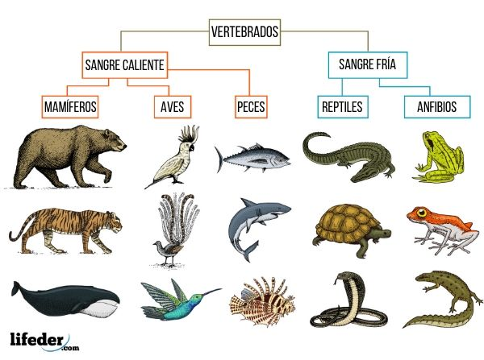
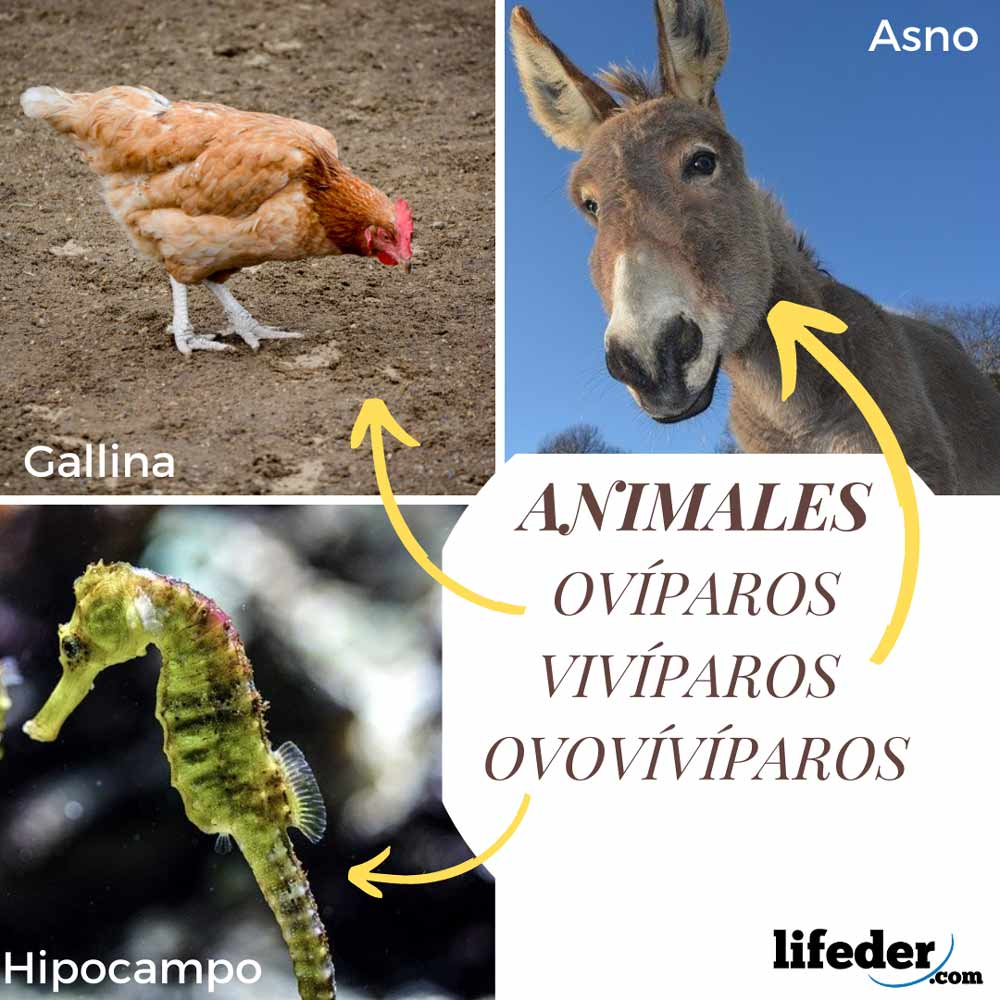

APRENDEMOS DE ANIMALES
¿Qué son los animales realmente?
Los seres del reino animal son pluricelulares. Todos los animales tienen unas características que los diferencian de las plantas: pueden desplazarse, son heterótrofos y responden rápidamente a los cambios del medio en el que viven.
Aparte de estos tecnicismos los animales nos aportan un lado sentimental imposible de experimentar con los humanos, algo que encienden una vez en tu vida que es imposible de apagar o incluso de igualar.
¿ESPECIES?
Hay distintos estilos o especies en el mundo que cada uno de ellos te asombra más que el anterior.
Tipos
Vertebrados e invertebrados
Vivíparos, ovíparos y ovovivíparos
Herbívoros, carnívoros y omnívoros
Terrestres, acuáticos y aéreos
-Vertebrados e invertebrados: Los vertebrados son aquellos que tienen huesos y columna vertebral y los invertebrados aquellos que carecen de huesos.

-Vivíparos, ovíparos y ovovivíparos: Los vivíparos son aquellos animales que nacen de huevos, los vivíparos nacen del vientre materno y por último, los ovovivíparos se forman en huevo dentro de la madre.

-Herbívoros, carnívoros y omnívoros: Los herbívoros se alimentan de plantas, los carnívoros comen carne de otros animales y los omnívoros comen ambos tanto plantas como carne.
-Terrestres, acuáticos y aéreos: Los animales terrestres son aquellos que viven en la tierra, los acuáticos en el agua y los aéreos son animales que vuelan y se desplazan por el aire.